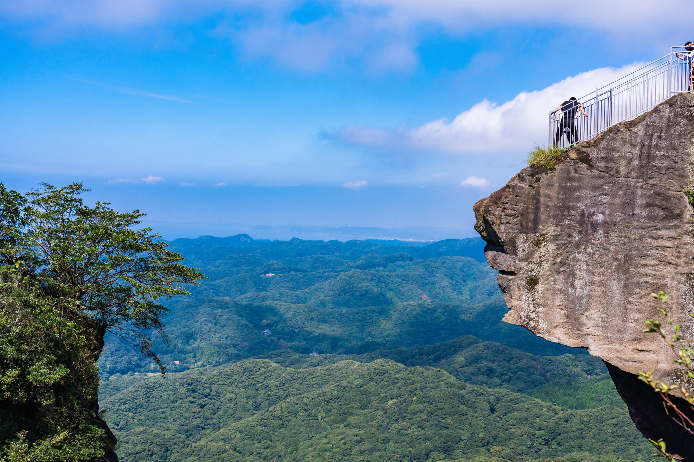

Nokogiriyama & Cape Futtsu

Day trip from Shinagawa: climb Nokogiriyama’s cliff temples and stroll Cape Futtsu’s coastline.
-
Meet at Shinagawa Station (East Exit)
You’ll receive a pre-loaded Suica card for all transport today.
-
07:30 Keikyu Line to Kurihama.
-
08:15–09:00 Ferry to Kanaya pier.
-
09:00–10:30 Hike Nokogiriyama: see the Hyaku-shaku Kannon and the giant Buddha.
-
11:00 Picnic lunch with mountain vistas.
-
11:45–12:30 Train + bus to Cape Futtsu Park.
-
12:30–14:00 Beachside stroll and Mt. Fuji views.
-
14:30 Return to Shinagawa, arrive by early evening.
Book Now